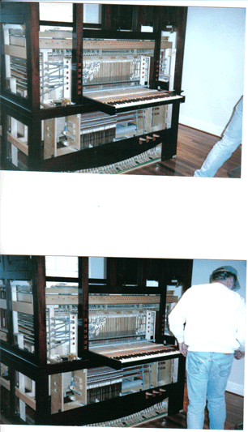
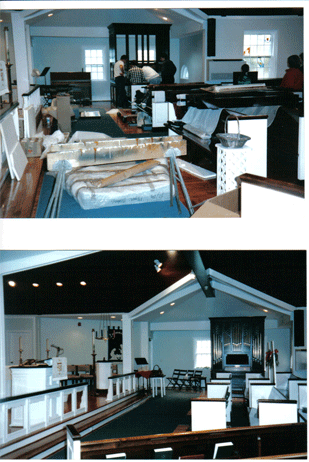

HTLC Music Ministry
Music is central to our worship at Holy Trinity. Our music supports our liturgies by adding another dimension to the spoken word and scripture we read and study each week.
The music of our liturgies is led by the Holy Trinity Choir, guest vocalists and instruments, and our Minister of Music, Peter Isherwood.
Opportunities exist within our music ministry for instrumentalists and vocalists. The music we worship with ranges from Bach Chorales to Contemporary Christian Hymns and Songs. Prior musical training is helpful but not necessary to be a part of our music making. All who are interested are encouraged to lend their talents to our music ministry, simply contact the church office for more information!
The Holy Trinity Choir is open to all High School students and adults and meets every Wednesday evening in the church at 7:30pm.
Instrumentalists ranging from Brass to Guitar and Woodwind players are featured throughout the church year and at special occasions.
The Pipe Organ was built in 1995 by Petty-Madden Organ Builders of Hopewell, NJ. The instrument features tracker action, 15 stops, and almost 700 pipes.

The Grand Piano was given in loving memory of Sally Ferber by her family. The piano is a Yamaha GC1 that was purchased in 2006 after an extensive search.
Our Minister of Music is Peter Isherwood. Peter grew up in the Red Bank area and attended Rumson-Fair Haven High School. While a student, Peter studied piano with Judy Werner and organ with Charles Harris, both of First Presbyterian Church in Red Bank. Upon graduating from high school, he went on to get two degrees in music, Sacred Music and Music Education, from Westminster Choir College. After graduating from Westminster, Peter pursued graduate studies in Organ Performance at Rowan University, after which he became the Choral Director at Middletown High School North, and the Minister of Music at Holy Trinity. He has served churches of various denominations throughout New Jersey and Pennsylvania and is very happy to lead the music at Holy Trinity.